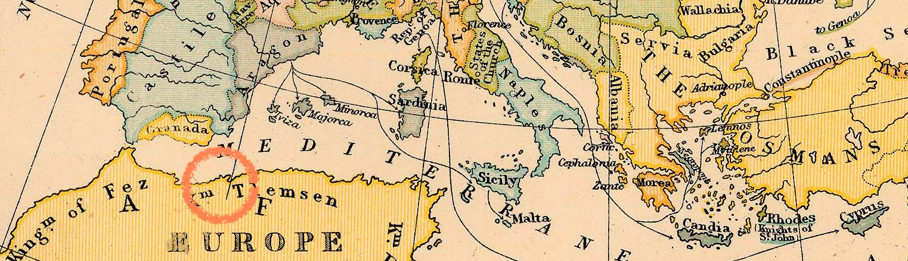

유럽의 작은 도시,
치명적인 전염병 페스트가 번지다.

알베르 카뮈의 소설 페스트의 배경은 14세기 유럽의 오랑 시. 어느 날, 도시의 쥐들이 사람들 주위를 돌다가 피를 토하며 죽습니다. 그것이 페스트의 시작. 흑사병이라 불리는 이 전염병은 금세 도시 전체에 퍼지게 됩니다.
“그의 작품은 우리 시대의 인간 양심의 문제를 명확하게 조명한다.”
알베르 카뮈가 전쟁의 경험을 통해 쓴 이 작품은 1957년 노벨 문학상을 수상합니다. 제2차 세계대전이 끝난 이 시기, 인간의 연대와 양심에 대한 이 책은 사람들에게 필요한 이야기였던 것이죠.
초기 대응에 실패한 정부는 결국...
페스트가 시작되었지만 페스트가 사람들을 혼란에 빠뜨려 폭동이 일어날까 두려웠던 오랑 시의 공무원들. 발표를 미루다가 더 큰 인명피해가 발생하자 그제서야 페스트 사태를 선언하고 도시를 폐쇄합니다.
위험 속에 갇힌 시민들
그리고 답보 상태의 도시
랑베르가 방에서 반복해서 듣던 음악 Louis Armstrong_ St. James Infirmary
도시가 폐쇄되니 식량도 부족, 전기도 부족. 그들은 위생적으로 위협받을 수 밖에 없는 상황이었습니다. 말도 안되는 루머로 술을 마시고 취한 사람이 길에 가득했고, 구원받길 바라며 회개하고 기도하는 사람들로 교회는 호황을 누렸습니다. 무엇보다 사람들을 괴롭게 한 것은, 시외에 있는 사랑하는 사람들과 만나지 못한다는 사실. 그것이었습니다.
“페스트란 바로 처음부터,
자꾸 다시 시작하는 게 특징이라니까요.”
- 랑베르
감염병을 대하는 대중의 태도 3단계
폭력과 범죄가 만연한 도시에서 사형이라는 정부의 처벌은 소용없었습니다. 오히려 집단 발병의 위험이 증가하는 감옥에 투옥당하는 것을 더 두려워했죠. 이렇듯 페스트 속에서는 감염병을 대하는 대중의 태도 3단계를 잘 표현하고 있습니다.
1단계 불안
자신이 감염되지 않을까 하는 불안. 사형보다 감옥 투옥이 더 두려웠던 오랑 시 시민들을 보면, 그들은 죽음보다는 감염을 두려워하죠.
2단계 혐오
위험을 피하고자 하는 건 인간의 본성. 하지만 그것이 감염자들에 대한 혐오와 배제로 나타나서는 안됩니다. 그들을 지지하고 격려해주어야 합니다.
3단계 희생양 찾기
마지막으로는 문제의 원인을 찾기 시작합니다. 보건 관련 공무원이나 의료인을 탓하는 등, 희생양을 찾죠.
정보전염병, 잘못된 기사 한 줄의 파장
오랑 시의 한 신문 기사 한 줄, ‘레인코트를 입으면 감염의 위험을 줄일 수 있다.’ 사람들은 레인코트를 사들이기 시작합니다. 상인들은 그걸 이용해 남은 재고까지도 다 팔아버리죠. 심지어는 박하사탕까지. 공포를 파는 사람들이 등장한 것입니다.
information + epidemic = INFODEMIC
이처럼 잘못된 정보나 악성루머 등이 미디어, 인터넷 등을 통해 빠르게 확산하는 현상을 정보전염병이라고 합니다. 이 현상을 막기 위해서는 대중들이 정보를 선별적으로 받아들일 필요가 있습니다. 무엇보다 진실된 정보를 제공하는 정부와 언론의 역할이 중요하죠.
“나는 영웅이 아닙니다.
그저 책임을 다 할 뿐이에요.”
외지의 기자, 랑베르
아내를 만나기 위해 오랑 시를 떠나고자 하지만, 실패하고 보건대와 함께 합니다. 도시를 떠날 수 있게 되었으나, 양심에 따라 도시를 떠나지 않고 페스트에 맞서 싸웁니다.
젊은 의사, 리외
쥐의 죽음에 가장 먼저 의문을 품었던 인물. 보건대에서 페스트가 사라질 때까지 셀 수 없이 많은 사람들을 살리며 의사로서 자신의 책임을 다했습니다.
도시의 청년, 타루
페스트를 방관하는 것은 살인이라고 생각하여 민간인 신분으로 보건자원봉사대를 만든 인물. 연대를 도모했지만, 페스트가 사라져가는 그 시기에 전염되어 목숨을 잃습니다.
성실함이야말로
전염병을 이기는 힘
랑베르, 리외, 파늘루 신부 등 페스트와 맞서 싸운 인물들은 모두 타루가 만든 보건대에 합류해 연대하였습니다. 많은 감염자들을 돌보고 살려냈죠. 그들이 영웅주의에 빠져있어서? 아닙니다. 페스트를 방관하지 않고, 성실함을 가지고 책임을 다한 것 뿐이죠.
세상의 부조리에 맞서 싸우기 위해
우리는 세상의 부조리가 나이든 내 주변 사람이든 누구에게나 언제든 일어날 수 있다는 점을 인지해야 합니다. 이 순간도 누군가는 우울과 분노에 휩싸여 있습니다. 그들을 헤아리고, 건강한 세상을 위해 책임과 성실의 자세를 가져야 하는 게 아닐까요.